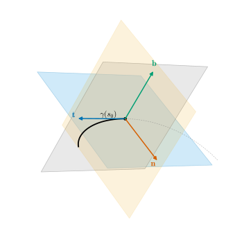
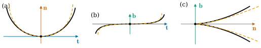

5.5 The Local Canonical Form
Goals
- 한 점의 Frenet frame을 좌표축으로 삼아 곡선을 \(3\)차까지 Taylor 전개한 local canonical form을 유도할 수 있다.
- osculating plane, rectifying plane, normal plane에 비친 곡선이 각각 포물선, cubic curve, cusp를 가진 곡선을 닮음을 설명할 수 있다.
- 곡선이 rectifying plane의 한쪽에 놓이고, \(\tau \neq 0\)이면 osculating plane을 뚫고 지나가며 그 방향이 \(\tau\)의 부호로 정해짐을 증명할 수 있다.
Prerequisites
- Theorem 5.3.1 (Frenet–Serret formulas), Example 5.3.6 (twisted cubic), Example 5.3.3 (Frenet frame of the helix)
- Definition 5.1.9 (osculating plane), Theorem 5.1.14 (the osculating plane and osculating circle fit the curve most closely), Remark 5.2.11
- 1변수 Taylor's theorem(Lemma 2.2.16), extreme value theorem(Theorem 3.6.10), 적분의 triangle inequality(Lemma 4.2.9)
Motivation
Theorem 5.4.8은 \(\kappa\)와 \(\tau\)가 곡선을 결정한다고 말한다. 그러나 “결정한다”는 것만으로는 \(\kappa\)와 \(\tau\)가 곡선의 모양을 어떻게 정하는지 보이지 않는다. 이 절은 한 점 근처의 모양을 직접 계산한다. 방법은 간단하다. 그 점의 Frenet frame을 좌표축으로 잡고 곡선을 Taylor 전개하면, 각 좌표의 첫 몇 항의 coefficient가 \(\kappa\), \(\kappa'\), \(\tau\)로 쓰인다. Example 5.3.6의 twisted cubic \((t, t^2, t^3)\)은 원점에서 frame이 standard basis였다. 그 곡선이 모든 곡선의 국소적인 모형이라는 것이 이 절의 결론이다.

The Local Canonical Form
osculating plane(Definition 5.1.9) 말고도 Frenet frame의 두 벡터가 만드는 평면이 둘 더 있다.
Definition 5.5.1 (normal plane and rectifying plane). \(\gamma\)가 arc length로 parametrization되어 있고 \(\kappa(s) \gt 0\)이라 하자.
- \(\gamma(s)\)를 지나고 \(\mathbf{n}(s)\), \(\mathbf{b}(s)\)의 span을 방향으로 하는 평면을 \(s\)에서 \(\gamma\)의 normal plane(법평면)이라 한다. 접선에 수직인 평면이다.
- \(\gamma(s)\)를 지나고 \(\mathbf{t}(s)\), \(\mathbf{b}(s)\)의 span을 방향으로 하는 평면을 \(s\)에서 \(\gamma\)의 rectifying plane(전직평면)이라 한다. principal normal에 수직인 평면이다.
normal plane은 \(\kappa = 0\)이어도 뜻이 있다(접선에 수직인 평면). 예를 들어 원의 normal plane은 원의 중심을 지나고 원의 평면에 수직인 평면이고, rectifying plane은 원에 접하고 원의 평면에 수직인 평면이다. \(xy\)평면의 곡선이면 osculating plane이 \(xy\)평면이고, 나머지 두 평면은 \(xy\)평면에 수직이다. 세 평면의 unit normal vector는 각각 \(\mathbf{b}\)(osculating plane), \(\mathbf{t}\)(normal plane), \(\mathbf{n}\)(rectifying plane)이다.
이제 \(s_0 \in I\)을 고정하고 \(\mathbf{t}_0 = \mathbf{t}(s_0)\) 등으로 쓰자. \(\gamma(s_0)\)를 원점으로, \((\mathbf{t}_0, \mathbf{n}_0, \mathbf{b}_0)\)를 좌표축으로 하는 좌표로 곡선을 나타낸다. \(h = s - s_0\)으로 두고
라 하면 orthonormal basis로 전개해 \(\gamma(s_0 + h) = \gamma(s_0) + x(h)\mathbf{t}_0 + y(h)\mathbf{n}_0 + z(h)\mathbf{b}_0\)이다(Proposition 1.5.9). \(z\)는 osculating plane까지의 부호 있는 거리, \(y\)는 rectifying plane까지의, \(x\)는 normal plane까지의 부호 있는 거리다.
Theorem 5.5.2 (local canonical form). \(\gamma\colon I \to \R^3\)이 arc length로 parametrization되어 있고 \(I\)에서 \(\kappa \gt 0\)이며 \([s_0 - \delta, s_0 + \delta] \subseteq I\)이라 하자. \(\kappa, \kappa', \tau\)를 \(s_0\)에서의 값으로 쓰면, \(M \ge 0\)이 있어 \(\abs{h} \le \delta\)일 때
이다.
이 정리가 말하는 것. 한 점 근처에서 곡선은 \(1\)차로는 접선을 따라가고(\(x \approx h\)), \(2\)차로는 curvature \(\kappa\)만큼 principal normal 쪽으로 휘며(\(y \approx \kappa h^2/2\)), \(3\)차로는 \(\kappa\tau\)에 비례해 osculating plane을 벗어난다(\(z \approx \kappa\tau h^3/6\)). torsion은 \(3\)차 항에서야 처음 나타나는 “더 미세한” 정보다.
Proof idea: \(\gamma(s_0 + h)\)를 \(3\)차까지 Taylor 전개하고, \(\gamma' = \mathbf{t}\), \(\gamma'' = \kappa\mathbf{n}\), \(\gamma'''\)을 Frenet–Serret formulas로 frame에 대해 전개한 뒤 각 성분을 읽는다.
Proof. Frenet–Serret formulas(Theorem 5.3.1)에서 \(\gamma' = \mathbf{t}\), \(\gamma'' = \mathbf{t}' = \kappa\mathbf{n}\)이고, 곱의 미분법으로
이다. \(J = [s_0 - \delta, s_0 + \delta]\)는 compact이므로 연속함수 \(\abs{\gamma''''}\)은 \(J\)에서 최댓값 \(M_4\)를 가진다(Theorem 3.6.10). \(\gamma\)의 각 성분에 Lemma 2.2.16을 \(k = 3\)으로 쓰면
\[ \begin{aligned} \gamma(s_0 + h) - \gamma(s_0) &= h\,\gamma'(s_0) + \frac{h^2}{2}\gamma''(s_0) + \frac{h^3}{6}\gamma'''(s_0) + R(h),\\ R(h) &= \frac{1}{6}\int_0^h (h - u)^3\,\gamma''''(s_0 + u)\,du \end{aligned} \]이고, Lemma 4.2.9에서 \(\abs{R(h)} \le \frac16\big\lvert\int_0^h \abs{h - u}^3 M_4\,du\big\rvert = M_4 h^4/24\)이다. 이 식과 \(\mathbf{t}_0, \mathbf{n}_0, \mathbf{b}_0\)의 inner product를 취하면, \(\gamma'(s_0) = \mathbf{t}_0\), \(\gamma''(s_0) = \kappa\mathbf{n}_0\)과 (5.5.3)에서
\[ \begin{aligned} x &= h - \frac{\kappa^2}{6}h^3 + \inner{R}{\mathbf{t}_0}, \qquad y = \frac{\kappa}{2}h^2 + \frac{\kappa'}{6}h^3 + \inner{R}{\mathbf{n}_0},\\ z &= \frac{\kappa\tau}{6}h^3 + \inner{R}{\mathbf{b}_0} \end{aligned} \]이다. Cauchy–Schwarz inequality에서 세 나머지는 모두 \(\abs{R(h)} \le M_4h^4/24\) 이하이므로 \(M = M_4/24\)로 두면 된다.
이 전개를 \(\gamma\)의 \(s_0\) 근처의 local canonical form(국소 표준형)이라 한다. Theorem 5.1.14(a)에서는 osculating plane까지의 거리가 \(\abs{h}^3\) 정도라는 것만 알았는데, 이제 그 coefficient가 \(\kappa\tau/6\)임을 안다. 이 coefficient가 \(0\)이 아니면 거리는 정확히 \(3\)차로 작아진다.
Example 5.5.3 (local canonical form of the helix, running example). helix의 arc length parametrization (4.3.2)와 Example 5.3.3의 frame에서 \(s_0 = 0\)이면 \(\mathbf{t}_0 = (0, a/c, b/c)\), \(\mathbf{n}_0 = (-1, 0, 0)\), \(\mathbf{b}_0 = (0, -b/c, a/c)\)이고 \(\gamma(s) - \gamma(0) = (a\cos\tfrac sc - a,\ a\sin\tfrac sc,\ \tfrac{bs}{c})\)이다. inner product를 계산하면 local canonical form이 정확한 식으로 나온다.
\(\sin u = u - u^3/6 + \cdots\), \(1 - \cos u = u^2/2 - \cdots\)을 넣으면 \(x = s - \tfrac{a^2}{6c^4}s^3 + \cdots\), \(y = \tfrac{a}{2c^2}s^2 + \cdots\), \(z = \tfrac{ab}{6c^4}s^3 + \cdots\)이다. \(\kappa = a/c^2\), \(\tau = b/c^2\), \(\kappa' = 0\)이므로 이것은 (5.5.2)와 정확히 같다(\(\kappa^2 = a^2/c^4\), \(\kappa\tau = ab/c^4\)).
Verification: verify/v-5-5-local-canonical-form.py
Example 5.5.4 (shadows on the three planes). local canonical form의 주요항만 남기면 \(x \approx h\), \(y \approx \tfrac{\kappa}{2}h^2\), \(z \approx \tfrac{\kappa\tau}{6}h^3\)이다. \(h\)를 소거하면 세 평면에 비친 곡선의 근사식을 얻는다.
(셋째 식: \(z^2 \approx \kappa^2\tau^2h^6/36\), \(y^3 \approx \kappa^3h^6/8\).) 곧 \(\mathbf{b}\) 쪽에서 보면 곡선은 curvature \(\kappa\)인 포물선처럼 보이고(Example 4.4.6(a)에서 vertex의 curvature가 \(\kappa\)), \(\mathbf{n}\) 쪽에서 보면 inflection point를 가진 cubic curve, \(\mathbf{t}\) 쪽에서 보면 cusp를 가진 semicubical parabola(Non-example 4.1.9와 같은 모양)이다. \(\tau = 0\)이면 둘째와 셋째 그림자는 \(3\)차까지 평평하다. Figure 5.5.2는 helix의 실제 그림자와 이 근사식을 비교한 것이다.

On Which Side the Curve Lies
local canonical form은 곡선이 세 평면의 어느 쪽에 있는지를 알려 준다. plane curve의 Proposition 4.5.4(곡선은 접선의 어느 쪽에 있는가)의 공간판이다.
Corollary 5.5.5 (sides of the osculating plane and the sign of torsion). Theorem 5.5.2의 상황에서 \(\delta' \gt 0\)가 있어 다음이 성립한다.
- (a) \(0 \lt \abs{h} \lt \delta'\)이면 \(y(h) \gt 0\)이다. 곧 \(s_0\) 근처에서 곡선은 rectifying plane의 \(\mathbf{n}_0\) 쪽에 있고, rectifying plane과는 \(\gamma(s_0)\)에서만 만난다.
- (b) \(\tau(s_0) \gt 0\)이면 \(0 \lt \abs{h} \lt \delta'\)에서 \(z(h)\)는 \(h\)와 부호가 같다. 곧 \(s\)가 늘어날 때 곡선은 \(\gamma(s_0)\)에서 osculating plane을 \(-\mathbf{b}_0\) 쪽에서 \(+\mathbf{b}_0\) 쪽으로 뚫고 지나간다. \(\tau(s_0) \lt 0\)이면 \(+\mathbf{b}_0\) 쪽에서 \(-\mathbf{b}_0\) 쪽으로 지나간다.
- (c) \(x\)는 \(h = 0\) 근처에서 strictly increasing이다. 곧 곡선은 normal plane을 \(-\mathbf{t}_0\) 쪽에서 \(+\mathbf{t}_0\) 쪽으로 가로지른다.
Proof. (a) (5.5.2)에서 \(y(h)/h^2 = \kappa/2 + \kappa'h/6 + R_y/h^2\)이고 \(\abs{R_y/h^2} \le Mh^2\)이므로 \(h \to 0\)이면 \(y(h)/h^2 \to \kappa/2 \gt 0\)이다. 따라서 \(\delta' \gt 0\)가 있어 \(0 \lt \abs{h} \lt \delta'\)이면 \(y(h)/h^2 \gt 0\), 곧 \(y(h) \gt 0\)이다. (b) 같은 방식으로 \(z(h)/h^3 = \kappa\tau/6 + R_z/h^3 \to \kappa\tau/6\)이고 \(\kappa \gt 0\)이다. \(\tau \gt 0\)이면 \(h\)가 \(0\)에 가까울 때 \(z(h)/h^3 \gt 0\), 곧 \(z(h)\)와 \(h^3\)(따라서 \(h\))의 부호가 같다. \(\tau \lt 0\)이면 반대다. (c) \(x'(h) = \inner{\mathbf{t}(s_0 + h)}{\mathbf{t}_0}\)은 연속이고 \(h = 0\)에서 \(1\)이므로 \(0\) 근처에서 양수다. 세 경우 모두 \(\delta'\)을 셋 가운데 가장 작은 값으로 잡으면 된다.
(b)가 Remark 5.2.11에서 예고한 torsion의 부호의 뜻이다. 오른손 helix(\(\tau \gt 0\))을 따라 올라가면 곡선은 매 순간 osculating plane을 \(\mathbf{b}\) 쪽으로 뚫고 나간다(Figure 5.5.1). (a)는 곡선이 rectifying plane을 “가로지르지 않고 스친다”는 것이고, principal normal이 곡선이 휘어 들어가는 쪽이라는 말을 정확히 한 것이다. (b)에서 \(\tau(s_0) \neq 0\)은 빠질 수 없다.
Non-example 5.5.6 (the curve need not cross the osculating plane where \(\tau = 0\)). \(\gamma(t) = (t, t^2, t^4)\)는 \(\gamma' = (1, 2t, 4t^3)\), \(\gamma'' = (0, 2, 12t^2)\), \(\gamma''' = (0, 0, 24t)\)이고 \(\gamma' \times \gamma'' = (16t^3, -12t^2, 2)\)이다. Proposition 5.3.4에서 \(\tau = 48t/\abs{\gamma' \times \gamma''}^2\)이므로 \(\tau(0) = 0\)이고, \(t = 0\)에서 \(\kappa = 2\), frame은 standard basis다. osculating plane은 \(xy\)평면이고 \(z = t^4 \ge 0\)이므로 곡선은 \(t = 0\)에서 osculating plane에 닿기만 하고 \(+\mathbf{b}_0\) 쪽에 머문다. \(3\)차 항이 사라지면 부호를 정하는 것은 더 높은 차수의 항이다.
Verification: verify/v-5-5-local-canonical-form.py
Example 5.5.7 (the twisted cubic as a model of the canonical form). twisted cubic \((t, t^2, t^3)\)은 원점에서 \(\kappa = 2\), \(\tau = 3\)이고 frame이 standard basis였다(Example 5.3.6). curvature는 \(t\)의 짝함수이므로 \(\kappa'(0) = 0\)이다. 속력은 \(\sqrt{1 + 4t^2 + 9t^4} = 1 + 2t^2 + O(t^4)\)이므로 \(s = t + \tfrac23t^3 + O(t^5)\)이고, 거꾸로 \(t = s - \tfrac23s^3 + O(s^5)\)이다. 이것을 넣으면
\[ x = t = s - \tfrac23s^3 + \cdots, \qquad y = t^2 = s^2 + \cdots, \qquad z = t^3 = s^3 + \cdots \]이다(\(\cdots\)는 \(4\)차 이상). local canonical form의 coefficient \(\kappa^2/6 = 2/3\), \(\kappa/2 = 1\), \(\kappa\tau/6 = 1\)과 정확히 맞는다. 일반적으로 \(\kappa\tau \neq 0\)인 점에서 좌표축의 길이 단위를 적당히 바꾸면 곡선은 \(3\)차까지 \((u, u^2, u^3)\)과 같다(Exercise 5.5.4). twisted cubic이 모든 “일반적인” space curve의 국소 모형인 셈이다.
Verification: verify/v-5-5-local-canonical-form.py (arc length의 역함수 급수)
Remark 5.5.8 (sign of torsion and the right-handed screw). \((\mathbf{t}, \mathbf{n}, \mathbf{b})\)는 positively oriented이므로, \(+\mathbf{b}\) 쪽에서 osculating plane을 내려다보면 \(\mathbf{t}\)에서 \(\mathbf{n}\)으로 가는 회전은 반시계 방향이다(오른손 규칙, Figure 1.6.2). local canonical form에서 곡선은 osculating plane 안에서 \(\mathbf{t}\)에서 \(\mathbf{n}\) 쪽으로 휘고(\(y \gt 0\)), 동시에 \(\tau \gt 0\)이면 \(+\mathbf{b}\) 쪽으로 올라간다. 반시계 방향으로 돌면서 엄지 방향으로 나아가는 것이 오른손 나사다. 그래서 \(\tau \gt 0\)인 곡선은 국소적으로 오른손 나사처럼 감기고, Example 5.2.6에서 오른손 helix의 torsion이 양수였던 것과 맞는다. 이 해석이 이 study set이 \(\mathbf{b}' = -\tau\mathbf{n}\) 규약을 고른 이유다.
Summary
- 한 점에서 Frenet frame의 두 벡터씩이 osculating plane(\(\mathbf{t}, \mathbf{n}\)), normal plane(\(\mathbf{n}, \mathbf{b}\)), rectifying plane(\(\mathbf{t}, \mathbf{b}\))을 만든다(Definition 5.5.1).
- Frenet 좌표로 쓰면 \(x = h - \kappa^2h^3/6\), \(y = \kappa h^2/2 + \kappa'h^3/6\), \(z = \kappa\tau h^3/6\)에 \(O(h^4)\)의 나머지가 붙는다(Theorem 5.5.2). helix에서는 정확한 (5.5.4)로 확인된다.
- 세 평면에 비친 곡선은 포물선, cubic curve, cusp를 가진 곡선을 닮는다(Example 5.5.4). twisted cubic이 그 모형이다(Example 5.5.7).
- 곡선은 rectifying plane의 \(\mathbf{n}\) 쪽에 있고, \(\tau \gt 0\)이면 osculating plane을 \(-\mathbf{b}\) 쪽에서 \(+\mathbf{b}\) 쪽으로 지나간다. \(\tau = 0\)인 점에서는 지나가지 않을 수도 있다(Corollary 5.5.5, Non-example 5.5.6).
다음 절에서는 국소적인 성질에서 전역적인 성질로 넘어간다. closed plane curve를 한 바퀴 돌 때 접선이 몇 바퀴 도는지를 rotation index로 세고, 스스로 만나지 않는 closed curve의 rotation index는 \(\pm 1\)이라는 Hopf의 rotation index theorem을 증명한다.
Exercises
Exercise 5.5.1 ★ \(a = b = 1\)인 helix에 대해 (5.5.4)를 쓰고, \(3\)차까지의 전개가 (5.5.2)와 같음을 확인하여라.
Solution
\(c = \sqrt2\)이므로 \(x = \tfrac{1}{\sqrt2}\sin\tfrac{s}{\sqrt2} + \tfrac s2\), \(y = 1 - \cos\tfrac{s}{\sqrt2}\), \(z = \tfrac{1}{\sqrt2}\big(\tfrac{s}{\sqrt2} - \sin\tfrac{s}{\sqrt2}\big)\)이다. 전개하면 \(x = \tfrac{1}{\sqrt2}\big(\tfrac{s}{\sqrt2} - \tfrac{s^3}{6 \cdot 2\sqrt2}\big) + \tfrac s2 + \cdots = s - \tfrac{s^3}{24} + \cdots\), \(y = \tfrac{s^2}{4} + \cdots\), \(z = \tfrac{1}{\sqrt2}\cdot\tfrac{s^3}{6 \cdot 2\sqrt2} + \cdots = \tfrac{s^3}{24} + \cdots\)이다. \(\kappa = \tau = 1/2\)이므로 (5.5.2)의 coefficient는 \(\kappa^2/6 = 1/24\), \(\kappa/2 = 1/4\), \(\kappa\tau/6 = 1/24\)로 같다.
Verification: verify/v-5-5-local-canonical-form.py
Exercise 5.5.2 ★ local canonical form에서 \(\kappa(s_0) = \lim_{h \to 0} 2y(h)/h^2\), \(\tau(s_0) = \lim_{h \to 0} 6z(h)/(\kappa(s_0)h^3)\)임을 보여라. 곧 curvature와 torsion은 곡선이 rectifying plane과 osculating plane에서 벗어나는 빠르기로 잴 수 있다.
Solution
(5.5.2)에서 \(2y/h^2 = \kappa + \kappa'h/3 + 2R_y/h^2\)이고 \(\abs{2R_y/h^2} \le 2Mh^2\)이므로 극한은 \(\kappa\)이다. \(6z/(\kappa h^3) = \tau + 6R_z/(\kappa h^3)\)이고 \(\abs{6R_z/(\kappa h^3)} \le 6M\abs{h}/\kappa\)이므로 극한은 \(\tau\)이다(\(\kappa \gt 0\)).
Verification: verify/v-5-5-local-canonical-form.py (helix)
Exercise 5.5.3 ★ \(\kappa \gt 0\)인 unit-speed curve에 대한 다음 주장이 참인지 거짓인지 판별하고 이유를 대어라. (a) \(s_0\) 근처에서 곡선은 \(s_0\)에서의 normal plane의 한쪽에 있다. (b) \(s_0\) 근처에서 곡선은 \(s_0\)에서의 rectifying plane의 한쪽에 있다. (c) plane curve의 osculating plane에 비친 그림자는 곡선 자신이다. (d) 왼손 helix는 osculating plane을 \(+\mathbf{b}\) 쪽에서 \(-\mathbf{b}\) 쪽으로 지나간다.
Solution
(a) 거짓. \(x\)는 \(h\)와 부호가 같으므로(Corollary 5.5.5(c)) normal plane을 가로지른다. (b) 참. Corollary 5.5.5(a). (c) 참. Proposition 5.1.13에서 plane curve의 osculating plane은 곡선이 놓인 평면이다. \(z \equiv 0\)이다. (d) 참. 왼손 helix는 \(\tau \lt 0\)이다(Example 5.2.6). Corollary 5.5.5(b).
Exercise 5.5.4 ★ \(\kappa(s_0)\tau(s_0) \neq 0\)이라 하자. 새 좌표 \(X = \alpha x\), \(Y = \beta y\), \(Z = \mu z\)와 새 매개변수 \(u = \lambda h\)를 적당히 골라(\(\alpha, \beta, \mu, \lambda\)는 \(0\)이 아닌 상수) local canonical form의 주요항이 \(X \approx u\), \(Y \approx u^2\), \(Z \approx u^3\)이 되게 하여라.
Solution
주요항은 \(x \approx h\), \(y \approx \tfrac\kappa2h^2\), \(z \approx \tfrac{\kappa\tau}{6}h^3\)이다. \(\lambda = 1\), \(\alpha = 1\), \(\beta = 2/\kappa\), \(\mu = 6/(\kappa\tau)\)로 두면 \(X \approx h = u\), \(Y \approx h^2 = u^2\), \(Z \approx h^3 = u^3\)이다. 곧 좌표축의 눈금만 바꾸면 곡선의 \(3\)차까지의 모양은 twisted cubic이다(Example 5.5.7). twisted cubic에서는 \(\beta = 2/2 = 1\), \(\mu = 6/6 = 1\)이 되어 좌표를 바꿀 필요가 없다.
Exercise 5.5.5 ★★ \(\kappa(s_0) \gt 0\)이라 하자. \(h \neq 0\)이 충분히 작으면 \(s_0\)에서의 접선과 점 \(\gamma(s_0 + h)\)를 포함하는 평면이 꼭 하나 있고, \(h \to 0\)이면 그 평면의 unit normal vector가 \(\pm\mathbf{b}_0\)으로 수렴함을 보여라. (osculating plane은 “접선과 이웃한 점이 정하는 평면의 극한”이다.) [dC §1-6 변형]
Solution
Frenet 좌표에서 접선은 \(x\)축이므로, 접선을 포함하는 평면의 unit normal vector는 \(\nu = \cos\varphi\,\mathbf{n}_0 + \sin\varphi\,\mathbf{b}_0\) 꼴이다(\(\mathbf{t}_0\)에 수직). 이 평면이 \(\gamma(s_0 + h)\)를 지날 조건은 \(y(h)\cos\varphi + z(h)\sin\varphi = 0\)이다. Corollary 5.5.5(a)에서 \(y(h) \gt 0\)이므로 \((y, z) \neq 0\)이고, 이 조건을 만족하는 \(\nu\)는 \(\pm(-z(h)\,\mathbf{n}_0 + y(h)\,\mathbf{b}_0)/\sqrt{y^2 + z^2}\)뿐이다. 따라서 평면은 하나다. \(z/y = (\kappa\tau h^3/6 + R_z)/(\kappa h^2/2 + \kappa'h^3/6 + R_y) \to 0\)(분자는 \(O(h^3)\), 분모는 \(h^2\) 정도)이므로 \(\nu = \pm(-(z/y)\mathbf{n}_0 + \mathbf{b}_0)/\sqrt{1 + (z/y)^2} \to \pm\mathbf{b}_0\)이다.
Verification: verify/v-5-5-local-canonical-form.py (helix에서 \(z/y \to 0\))
Exercise 5.5.6 ★★ \(\kappa(s_0) \gt 0\)이라 하자. 평면 \(P\)가 \(s_0\)에서의 접선을 포함하고, \(s_0\)의 어떤 neighborhood를 잡아도 그 neighborhood의 \(s\)에 대한 점 \(\gamma(s)\)들이 \(P\)의 양쪽에 모두 있다면, \(P\)는 osculating plane임을 보여라. 거꾸로 \(\tau(s_0) \neq 0\)이면 osculating plane은 이 성질을 가진다. [dC §1-6 Exercise 1 변형]
Solution
Exercise 5.5.5처럼 \(P\)의 unit normal vector를 \(\nu = \cos\varphi\,\mathbf{n}_0 + \sin\varphi\,\mathbf{b}_0\)로 쓰면 \(\gamma(s_0 + h)\)의 \(P\)까지의 부호 있는 거리는 \(d(h) = y(h)\cos\varphi + z(h)\sin\varphi\)이다. \(\cos\varphi \neq 0\)이면 \(d(h)/h^2 \to (\kappa/2)\cos\varphi \neq 0\)이므로 \(0\)이 아닌 작은 \(h\)에서 \(d(h)\)는 부호가 일정하고, 곡선은 그 neighborhood에서 \(P\)의 한쪽(과 \(P\) 위의 점 \(\gamma(s_0)\))에만 있다. 가정에 어긋나므로 \(\cos\varphi = 0\), 곧 \(\nu = \pm\mathbf{b}_0\)이고 \(P\)는 osculating plane이다. 거꾸로 \(\tau(s_0) \neq 0\)이면 Corollary 5.5.5(b)에서 \(z(h)\)가 \(h \gt 0\)과 \(h \lt 0\)에서 부호가 반대이므로 곡선은 osculating plane의 양쪽에 있다. \(\tau(s_0) = 0\)이면 이 역은 성립하지 않을 수 있다(Non-example 5.5.6).
Exercise 5.5.7 ★★★ \(\gamma\)가 arc length로 parametrization되어 있고 \(\kappa \gt 0\), \(\tau(s_0) \neq 0\)이라 하자. \(\rho = 1/\kappa\)로 두고 \(s_0\)에서의 값으로 \(q = \gamma(s_0) + \rho\,\mathbf{n}_0 + (\rho'/\tau)\,\mathbf{b}_0\), \(r^2 = \rho^2 + (\rho'/\tau)^2\)이라 하자. \(f(s) = \abs{\gamma(s) - q}^2 - r^2\)이 \(f(s_0) = f'(s_0) = f''(s_0) = f'''(s_0) = 0\)을 만족함을 보여라. (중심 \(q\), 반지름 \(r\)인 sphere를 osculating sphere라 한다. Exercise 5.3.6과 비교하여라.)
Hint
\(q\)는 상수다. \(f' = 2\inner{\mathbf{t}}{\gamma - q}\)를 Frenet–Serret formulas로 두 번 더 미분하고 \(s_0\)에서 \(\gamma - q = -\rho\mathbf{n}_0 - (\rho'/\tau)\mathbf{b}_0\)을 넣는다.
Solution
\(w = \gamma - q\)라 하면 \(w(s_0) = -\rho\mathbf{n}_0 - (\rho'/\tau)\mathbf{b}_0\)이다. \(f(s_0) = \abs{w(s_0)}^2 - r^2 = \rho^2 + (\rho'/\tau)^2 - r^2 = 0\)이다. 미분하면(\(q\)는 상수)
\[ \begin{aligned} f' &= 2\inner{\mathbf{t}}{w}, \qquad f'' = 2\inner{\kappa\mathbf{n}}{w} + 2\inner{\mathbf{t}}{\mathbf{t}} = 2\kappa\inner{\mathbf{n}}{w} + 2,\\ f''' &= 2\kappa'\inner{\mathbf{n}}{w} + 2\kappa\inner{-\kappa\mathbf{t} + \tau\mathbf{b}}{w} + 2\kappa\inner{\mathbf{n}}{\mathbf{t}} \end{aligned} \]이다. \(s_0\)에서 \(\inner{\mathbf{t}_0}{w} = 0\), \(\inner{\mathbf{n}_0}{w} = -\rho\), \(\inner{\mathbf{b}_0}{w} = -\rho'/\tau\)이므로 \(f'(s_0) = 0\), \(f''(s_0) = -2\kappa\rho + 2 = 0\)이고 \(f'''(s_0) = -2\kappa'\rho - 2\kappa\tau\rho'/\tau = -2(\kappa'\rho + \kappa\rho')\)이다. \(\rho = 1/\kappa\)이므로 \(\rho' = -\kappa'/\kappa^2\)이고 \(\kappa'\rho + \kappa\rho' = \kappa'/\kappa - \kappa'/\kappa = 0\)이다. 곧 이 sphere는 곡선과 \(3\)차까지 맞닿는다. 곡선이 sphere 위에 있으면 그 sphere가 모든 점에서 osculating sphere가 되고, Exercise 5.3.6의 식 \(\gamma - p_0 = -\rho\mathbf{n} - (\rho'/\tau)\mathbf{b}\)가 바로 “\(p_0 = q\)”라는 말이다.
Verification: verify/v-5-5-local-canonical-form.py (twisted cubic의 \(t = 1\)에서 \(f\)와 세 도함수가 \(0\), 넷째 도함수는 \(0\)이 아님)